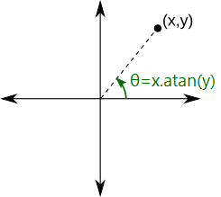
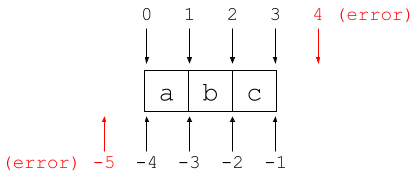
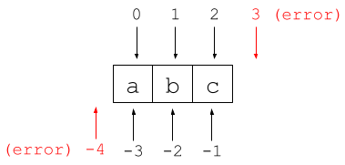
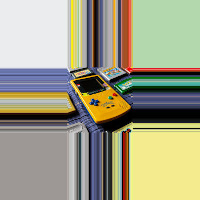
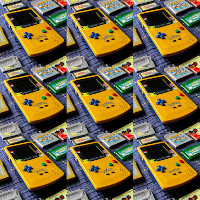
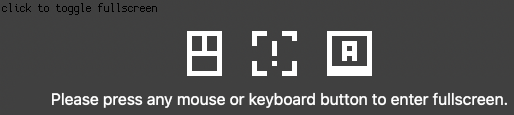
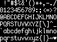

num.cos: Num
num.sin: Num
num.tan: Num
Get the cosine/sine/tangent of an angle measured in turns.
(0.25).sin // 1
![Plot of the num.pulse function, over the range x = [-2, 2].](media/sin.png)
Welcome to the Sock API documentation.
A boolean value. Has two instances: true and false.
A double-precision floating point number.
The value of infinity.
See also num.isInfinity.
The value of NaN.
See also num.isNan.
The value of π: 3.14159...
The value of 2π: 6.28318...
The largest decimal value that can be represented by a Num (approximately 1.8×10308).
The smallest positive decimal value that can be represented by a Num (approximately 2.2÷10308).
The largest integer that can be represented by a Num: 9007199254740991.
Safe refers to the fact that some integers above this value cannot be represented by a Num.
The smallest integer that can be represented by a Num: -9007199254740991.
Safe refers to the fact that some integers below this value cannot be represented by a Num.
Parse a decimal number from a string.
Returns null if the number cannot be parsed.
Get the absolute/positive value of a number.
Returns +1, -1 or 0 depending on the sign of a number.
Rounds a number to the nearest integer.
(3.1).round // 3 (-3.1).round // -3 (3.5).round // 4
Rounds a number down to the nearest integer.
(3.9).floor // 3 (-3.9).floor // -4
Rounds a number up to the nearest integer.
(3.1).ceil // 4 (-3.1).ceil // -3
Removes the fractional part of a number (round toward zero).
(3.9).truncate // 3 (-3.9).truncate // -3
Returns the square root of a number. Returns NaN if the number is negative.
4.sqrt // 2
Returns the cube root of a number.
8.cbrt // 2
n.exp returns en (e is euler's number).
0.exp // 1
Returns the number raised to the given power. Returns NaN if the number is negative.
2.pow(3) // 8
Returns the natural logarithm of the number. Returns NaN if the number is negative.
1.log // 0
Returns the base-2 logarithm of the number. Returns NaN if the number is negative.
8.log2 // 3
Get the minimum of two numbers.
Get the maximum of two numbers.
Clamps a number between min and max.
Get the fractional part of a number, with the same sign as the original number.
(5.7).fraction // 0.7 (-5.7).fraction // -0.7
Loops a number on the range 0 to 1.
(5.7).repeatFraction // 0.7 (-5.7).repeatFraction // 0.3
Loops a number on the range 0 to len.
(57).repeat(10) // 7 (-57).repeat(10) // 3
Loops a number on the range min to max.
(57).repeat(10, 20) // 17 (-57).repeat(10, 20) // 13
Bounces a number within the range 0 to len (inclusive).
a.lerp(b, t) linearly interporlates between a and b using t.
The value of t from 0 to 1 maps to a to b, though values outside 0 to 1 are valid.
300.lerp(400, 0.25) // 325 300.lerp(400, 1.50) // 450
a.inverseLerp(b, target) returns the t value that will give a.lerp(b, t) == target.
The target can be outside the range a to b.
If a == b then NaN is returned.
300.inverseLerp(400, 325) // 0.25 300.inverseLerp(400, 450) // 1.5 300.inverseLerp(300, 450) // NaN
Remaps a number from the range a1 to b1 to the range a2 to b2.
The number can be outside the range a1 to b1, in which case the result will also be outside the range a2 to b2.
If a1 == b1 then either a2 or b2 is returned depending on which side of a1 the number is on.
Applies the smoothstep function to the given number.
Maps from the range 0 to 1 to the range 0 to 1 (clamped).
In Sock, angles are expressed as turns, where 1 turn is equivalent to 360 degrees.
Num.tau.Get the cosine/sine/tangent of an angle measured in turns.
(0.25).sin // 1
Get the arccosine/arcsine/arctangent of a number, returning an angle measured in turns.
(1).asin // 0.25
x.atan(y) returns the minimum angle formed between the positive x-axis and the line from (0, 0) to (x, y).
The returned angle is measured in turns, between -0.5 and 0.5.
A periodic function that generates a pulse/square wave.
pulse uses the same general shape as num.sin.
num.pulse function.A periodic function that generates a triangle wave.
tri uses the same general shape as num.sin.
num.tri function.Returns a color's component as a byte between 0 and 255.
In other words, it converts the number to a 32bit integer and returns the byte at the corresponding position.
var c = #11223344 c.red // 0x11 c.green // 0x22 c.blue // 0x33 c.alpha // 0x44
Check if a number is an integer.
Check if a number is positive or negiative infinity.
(1/0).isInfinity // true
Check if a number is NaN.
(0/0).isNan // true
Get the remainder of left ÷ right.
Result has same sign as left.
If right is 0 then result is NaN.
See also num.repeat().
57 % 10 // 7 -57 % 10 // -7
Get the 32bit bitwise negation of a number.
~0xfffffff0 // 0x0000000f
Get the 32bit bitwise AND of two numbers.
0xff00 & 0xf0f0 // 0xf000
Get the 32bit bitwise OR of two numbers.
0xff00 | 0xf0f0 // 0xfff0
Get the 32bit bitwise XOR of two numbers.
0xff00 ^ 0xf0f0 // 0x0ff0
Get the 32bit bitwise left-shift of a number.
32 << 1 // 64
Get the 32bit bitwise right-shift of a number.
32 >> 1 // 16
Creates an inclusive Range from one number to another.
(4..7).toList // [ 4, 5, 6, 7 ]
Creates a non-inclusive Range from one number to another.
(4...7).toList // [ 4, 5, 6 ]
Text stored as an immutable array of UTF-8 bytes.
To access the bytes, use the methods byteCount, byteAt(), or bytes.
Otherwise, individual characters presented as code-points, rather than bytes.
"さかな".count // 3 "さかな".byteCount // 9
Strings provides three sequences by which to iterate over them:
| Sequence | Description | Example |
|---|---|---|
The String itself |
Iterates code-points as strings. | "さけ".toList // [ "さ", "け" ] |
string.codePoints |
Iterates code-points as numbers. | "さけ".codePoints.toList // [ 12373, 12369 ] |
string.bytes |
Iterates bytes as numbers. | "さけ".bytes.toList // [ 227, 129, 149, 227, 129, 145 ] |
Returns a new string containing a single byte.
String.fromByte(33) // "!"
Returns a new string containing a single unicode code-point.
String.fromCodePoint(0x1f9e6) // "🧦"
The length of the string in terms of the number of codepoints.
The length of the string in the terms of the number bytes.
Returns the byte at the given byte index.
Returns a new sequence that can be used to iterate the string's bytes (as numbers).
"さかな".bytes.toList // [ 227, 129, 149, 227, 129, 139, 227, 129, 170 ]
Returns a new sequence that can be used to iterate the string's codepoints (as numbers).
"さかな".codePoints.toList // [ 12373, 12363, 12394 ]
Check if a string contains another string.
"fish".contains("is") // true
Check if a string starts with another string.
"carp".startsWith("car") // true
Check if a string ends with another string.
"shark".endsWith("ark") // true
Returns the byte index of the first occurance of the given substring, or -1 if it can't be found.
The search begins from the specified start byte, which defaults to 0. search may be negative, which is counted backwards from the end.
"windmill".indexOf("i") // 1
"windmill".indexOf("z") // -1
"windmill".indexOf("i", 2) // 5
Returns a new string replacing all occurances of old with new.
"amazing".replace("a", "aaa") // aaamaaazing
Returns a new list containing the strings separated by separator.
It is an error if separator is an empty string.
"".split(" ") // [ "" ]
"a big dog".split(" ") // [ "a", "big", "dog" ]
"a big dog ".split(" ") // [ "a", "big", "dog", "" ]
Returns a new string with whitespace removed from the start/end of this string.
Whitespace includes spaces, tabs, and newlines.
trimStart will only remove from the start, trimEnd will only remove from the end, and trim will remove from both sides.
" hello world! ".trim() // "hello world!" " hello world! ".trimEnd() // " hello world!" " hello world! ".trimStart() // "hello world! "
Returns a new string with all code-points in chars removed from the start/end of this string.
trimStart will only remove from the start, trimEnd will only remove from the end, and trim will remove from both sides.
"abcba576abcba".trim("abc") // "576"
"abcba576abcba".trimEnd("abc") // "abcba576"
"abcba576abcba".trimStart("abc") // "576abcba"
Returns a string containing the code point starting at byte index.
The index may be negative, which is counted backwards from the end.
If index points to the middle of a UTF-8 sequence then this returns a 1-byte-string containing the byte at the given index.
// Each of these characters uses 3 bytes. "さかな"[3] // "か" "さかな"[4] // A non-printable string, equivalent to String.fromByte(129)
Concatenates two strings into one new string.
"so" + "ck" // "sock"
Creates a new string by repeating the string the given number of times.
"yo" * 3 // "yoyoyo"
Check if two strings are equal.
A special class with just one instance: null.
null is the only other value other than false to evaluates to false in the context of truthness.
An object that represents a consecutive range of numbers. Iterating over a range generates these numbers.
Ranges are created using the .. (inclusive) and ... (exlusive) operators on numbers:
(7..9).toList // [ 7, 8, 9 ] (7...9).toList // [ 7, 8 ]
A step is specified by using .. on a range:
(4..8..2).toList // [ 4, 6, 8 ]
Dynamically create a new Range.
Range.new(3, 9, 2, false) // 3...9..2
The range's start and end points.
(3..7).from // 3 (7..3).from // 7 (3..7).to // 7 (7..3).to // 3 (7...3).to // 3
The minimum and maximum of the range's from and to.
(7..3).min // 3 (7..3).max // 7
The range's step.
(3..7).step // 1 (3..7..2).step // 2
If the range includes to.
(3..7).isInclusive // true (3...7).isInclusive // false
Abstract base class for an iterable object.
Iteration is defined via the iterator protocol.
An protocol that allows objects to be iterated over using standard Wren features.
Implementers must provide two methods:
| Method | Description |
|---|---|
iterate(state) |
Takes the current iterator state and returns the next iterator state. On the first iteration this is passed Can return |
iteratorValue(state) |
Returns the actual value corresponding to the given iterator state. |
As an example, consider the following for loop:
for (i in 0..9) {
System.print(i)
}
Wren executes this loop as follows:
var seq = 0..9
var state = null
while (state = seq.iterate(state)) {
var i = seq.iteratorValue(state)
System.print(i)
}
In the following example we define an iterator that produces the fibonacci sequence up to a maximum value.
Several Sequence methods return lazily evaluated sequences: the resulting sequence is only generated as needed.
This makes it possible to use them with infinite sequences, or sequences with side effects.
Additionally, any changes in the original sequence will be reflected in the lazy sequence:
var a = [ 1, 2, 3 ]
var b = a.map {|n| n * 2 }
a.add(4)
b.toList // [ 2, 4, 6, 8 ]
You can use toList on the sequence to force eager evaluation.
Returns a singleton sequence that is always empty.
Returns a new sequence that contains a single value repeated the given number of times.
count defaults to 1.
Check if a sequence is empty.
This can be more efficient than count == 0 as isEmpty does not need to iterate the whole sequence.
Converts the sequence to a list, or a creates a copy if it's already a list.
(4..7).toList // [ 4, 5, 6, 7 ]
Returns the number of items in the sequence.
Unless a more efficient override is provided, this iterates over the whole sequence to count each item.
Returns the number of items in the sequence where predicate.call(item) returns true.
"banana".count {|c| c == "a" } // 3
Returns a new lazy sequence containing the items that pass the given predicate.
(1..99).where {|n| n.sqrt.isInteger }.toList // [ 1, 4, 9, 16, 25, 36, 49, 64, 81 ]
Returns the first item that passes the given predicate, or null if none pass.
[ "cat", "dog", "fish", "rat" ].find {|n| n.count == 4 } // "fish"
Check if every item passes the given predicate.
Returns true if the sequence is empty.
[ 1, 2, 3 ].all {|n| n < 5 } // true
[ 4, 5, 6 ].all {|n| n < 5 } // false
[ ].all {|n| n < 5 } // true
Check if at least one item passes the given predicate.
Returns false if the sequence is empty.
[ 4, 5, 6 ].any {|n| n < 5 } // true
[ 6, 7, 8 ].any {|n| n < 5 } // false
[ ].any {|n| n < 5 } // false
Returns a new lazy sequence containing this sequence's items transformed using the given function.
[ 1, 2, 3 ].map {|n| n * 2 }.toList // [ 2, 4, 6 ]
Reduce the sequence to a single value.
For each item, the given function is called with two arguments: an accumulator and the item.
The function's return value becomes the accumulator for the next item.
The accumulator is initialized to seed if provided, or otherwise the first item of the sequence.
// Calculate the sum.
[ 1, 2, 3, 4 ].reduce {|acc, n| acc + n } // 10
// Find the length of the longest word.
[ "cat", "shark", "fish" ].reduce(0) {|acc, s| s.count.max(acc) } // 5
Returns a new lazy sequence that only includes the first count items of this sequence.
[ 1, 2, 3, 4 ].take(2).toList // [ 1, 2 ] [ 1 ].take(99).toList // [ 1 ]
Returns a new lazy sequence that skips the first count items of this sequence.
[ 1, 2, 3, 4 ].skip(2).toList // [ 3, 4 ] [ 1 ].skip(99).toList // []
Calls the function with each item.
[ 1, 2, 3 ].each {|n| System.print(n) }
Check if any item in the sequence equals the given item (using the == operator).
(0..99).contains(47) // true
Join the sequence into a single concatenated string, optionally separated by the given separator.
[ 5, 7, 6 ].join() // "576"
"animal".join(" ") // "a n i m a l"
An indexible and dynamically sized sequence of items.
Creates a new list filled with count items.
Creates a new empty list. Equivalent to [].
Returns the number of items in the list (in constant time).
Removes all items from the list.
Adds an item to the end of the list, and returns it.
Adds all items in items to the end of the list. Returns items.
var xs = [ 1, 2 ] xs.addAll([ 3, 4 ]) // [ 3, 4 ] System.print(xs) // [ 1, 2, 3, 4 ]
Inserts an item at the given index, and returns it.
The index may be one past the last index (inserted at end), or negative (counted backwards from end).
This diagram shows valid indices when inserting into a list with 3 items:
var xs = [ "a", "b", "c" ] xs.insert(1, "_") xs.insert(-1, "d") System.print(xs) // [ "a", "_", "b", "c", "d" ]
Returns the index of the first item that equals the given value. Returns -1 if not found.
[ "cat", "dog", "rat", "fish" ].indexOf("rat") // 2
Removes the first item in the last that equals the given value.
Returns the removed value, or null if none was found.
Trailing items are shifted back to fill up the hole.
var xs = [ "a", "b", "c", "d" ]
xs.remove("c") // "c"
System.print(xs) // [ "a", "b", "d" ]
Removes the item at the given index.
The index may be negative (counted backwards from end).
Trailing items are shifted back to fill up the hole.
var xs = [ "a", "b", "c", "d" ] xs.removeAt(1) // "b" xs.removeAt(-1) // "d" System.print(xs) // [ "a", "c" ]
Swaps two items at the given indices.
The indices may be negative (counted backwards from end).
var xs = [ "a", "b", "c" ] xs.swap(0, -1) System.print(xs) // [ "c", "b", "a" ]
Sorts the list in place using quicksort. Returns the list.
The compare function takes two arguments, and returns true if the first parameter is before the second.
The default compare function is {|a, b| a < b }
[ 3, 2, 4, 1 ].sort() // [ 1, 2, 3, 4 ]
// Sort by length.
[ "fish", "ox", "cat" ].sort {|a, b| a.count < b.count } // [ "ox", "cat", "fish" ]
Displays the list's items in a string.
Note that Wren does not handle cycles in map.toString and list.toString, and it will get stuck in an infinite loop.
[ 1, true, "cat" ].toString // "[1, true, cat]"
Get or set an item at the given index.
The index may be negative (counted backwards from end).
This diagram shows valid indices when indexing into a list with 3 items:
var xs = [ "a", "b", "c" ] xs[0] // "a" xs[-1] // "c" xs[1] = "z"
If the index is a Range, then a list is returned with items in the range.
[ "a", "b", "c", "d" ][1..2] // [ "b", "c" ]
Creates a new list by concatenating the two operends.
[ 1, 2 ] + [ 3, 4 ] // [ 1, 2, 3, 4 ]
Creates a new list by repeating the list the given number of times.
[ 1, 2 ] * 3 // [ 1, 2, 1, 2, 1, 2 ] [ 1, 2 ] * 0 // []
A String, Number, Bool, Range, null, or Class (the class itself, not an instance of a class).
An unordered collection of key-value pairs.
Maps can hold any value, but only the following types of keys are supported:
Generally it is an error to use an unsupported key type.
Maps provides three sequences by which to iterate over them. Note that iteration order is undefined.
| Sequence | Description | Example |
|---|---|---|
The Map itself |
Iterates MapEntry objects. |
for (e in map) System.print("%(e.key) -> %(e.value)") |
map.keys |
Iterates keys. | for (k in map.keys) System.print(k) |
map.values |
Iterates values. | for (v in map.values) System.print(v) |
Returns a new empty map. Equivalent to {}.
Returns the number of entries in the map (in constant time).
Returns a new sequence that iterates over the values in the map, in an undefined order.
Returns a new sequence that iterates over the keys in the map, in an undefined order.
Check if the map contains the given key.
Remove all enties from the map.
Removes an entry from the map, and returns the removed value. Returns null if nothing was removed.
Displays the map's entries in a string.
Note that Wren does not handle cycles in map.toString and list.toString, and it will get stuck in an infinite loop.
{ "a": 1, "b": 2 }.toString // "{b: 2, a: 1}"
Get or set a map's entry. The getter returns null if the entry does not exist.
var map = { "a": 1 }
map["b"] = 2
map["a"] // 1
map["c"] // null
A map entry, provided by a map's iterator.
Changes to the original map are not reflected in this object.
Get the entry's key.
Get the entry's value.
Returns a new string in the format "%(key):%(value)".
The base class of all classes (the class itself, not an instance of a class).
Returns the name of the class.
class Fish {}
Fish.name // "Fish"
Return's this class's super-class. Only returns null when called on Object.
class Fish {}
class Shark is Fish {}
Shark.supertype // Fish
Fish.supertype // Object
Object.supertype // null
Return's this class's run-time attributes, or null if there are none.
Holds run-time attributes associated with a class (marked by #! rather than #?).
Accessed via class.attributes
Attributes can be put on classes and methods.
There are three types of attributes:
#!popular#!rating = 9.5#!tags(popular, rating = 9.5)Attribute values can be strings, numbers, booleans, or literals (e.g. #action = chomp).
Each class/method that has attributes has an associated Map.
These are populated in an unusual way, to the point of being unusable for some use cases. As such, this API is subject to change in future.
#!friend
#!lvl = 50
#!greeting = "Good morrow!"
#!greeting = "Ahoy!"
#!action(name = chomp, instant, dmg = 750)
#!action(name = snarl, cast, effect = terror)
class Shark {}
// The map that is generated for Shark.attributes.self
// Note that it is not possible to disguish which "action()" some attributes are associated with.
{
null: {
"friend": [ null ],
"greeting": [ "Good morrow!", "Ahoy!" ],
"lvl": [ 50 ]
},
"action": {
"name": [ "chomp", "snarl" ],
"cast": [ null ],
"instant": [ null ],
"dmg": [ 750 ],
"effect": [ "terror" ]
}
}
Returns attributes put on the class itself.
Returns attributes put on methods. Each entry has the method's signature as the key, and a map that contains the attributes on that method.
Displays all attributes as a string.
The base class of all objects.
This is similar to the == operator, except that it cannot be overriden by user defined classes.
System.print(Object.same(45, 45)) // true System.print(Object.same([], [])) // false var xs = [] System.print(Object.same(xs, xs)) // true
Returns the object's class.
[].type // List
The default implementation of toString. Returns instance of <class-name>.
Returns false.
Check if the given class is the object's class, or one of its super-classes.
[] is List // true [] is Sequence // true [] is Num // false
Check if two objects are equal:
An first class function.
A utility for creating new functions. Just returns the argument.
var fn = Fn.new {
System.print("hello!")
}
var add = Fn.new {|a, b| a + b }
The number of arguments the function requires.
Fn.new {|a, b| a + b }.arity // 2
Call the function with the given arguments.
The number of arguments must not be less than the function's arity (extra arguments are ignored).
Fn.new {|a, b| a + b }.call(1, 2) // 3
A lightweight coroutine. For more info see the official Wren tutorial.
A utility for creating new functions. Just returns the argument.
var fiber = Fiber.new {
System.print("hello!")
}
fiber.call() // prints "hello!"
The currently executing fiber.
Pauses the current fiber, passes control to the parent fiber.
If value is provided, it is returned from the parent's call().
If control is passed back to this fiber, yield() will return any passed value (e.g. via call(value)).
Aborts the current fiber with the given error message.
Once a fiber has been aborted, it cannot be re-entered.
Errors can be caught using fiber.try(). The error is also saved in fiber.error.
if (x < 0) Fiber.abort("x must be positive")
If the fiber can be called.
Returns the error message used to abort the fiber, or null if there is not error.
Passes control to the fiber.
If value is provided for an unstarted fiber, it is passed to the fiber's function argument. value defaults to null
var f = Fiber.new {|s|
System.print(s)
}
f.call("hello") // prints "hello"
If value is provided for a paused fiber, it is returned from the fiber's call to Fiber.yield().
var f = Fiber.new {
System.print(Fiber.yield())
}
f.call()
f.call("hello") // prints "hello"
call() will return any value passed via Fiber.yield(value), or null if none was provided.
var f = Fiber.new {
Fiber.yield("hello")
}
System.print(f.call()) // prints "hello"
It is an error to call() a finished fiber.
var f = Fiber.new { System.print("hello") }
f.call()
f.call() // error "Cannot call a finished fiber."
Passes control to the fiber, and catches any errors that occur.
Returns the error, or null if there was no error.
The value argument functions the same as fiber.call(value).
If there was an error, the fiber can no longer be used.
It is an error to try() a finished fiber.
var f = Fiber.new {|x| x.badmethod }
var e = f.try("hello")
System.print(e) // "String does not implement 'badmethod'."
Suspends the current fiber, and passes control to the fiber.
Unlike call(), the fiber will have no parent fiber to yield to.
// Only "hello!" is printed.
var f = Fiber.new {
System.print("hello!")
Fiber.yield()
System.print("not printed")
}
f.transfer()
System.print("not printed")
It is crucial that you eventually transfer() back to the main fiber eventually, otherwise Sock will soft-lock.
// Only "hello!" is printed.
var main = Fiber.current
var f = Fiber.new {
main.transfer()
System.print("not printed")
}
var x = f.transfer()
System.print("hello!")
The value argument functions the same as call(value).
transfer() will also return any value passed back to this fiber via call(value) or transfer(value).
It is an error to transfer() to a finished fiber.
Suspends the current fiber, passes control to the fiber, and then aborts the fiber with the given message.
Returns any value passed to this fiber via call(value) or transfer(value).
// Prints the following messages:
// "a!"
// "b!"
// "error: oof"
// "hello"
var a
var b
a = Fiber.new {
System.print("a!")
b.transfer()
System.print("not printed")
}
b = Fiber.new {
System.print("b!")
var s = a.transferError("oof")
System.print(s)
}
a.try()
System.print("error: %(a.error)")
b.call("hello")
// In case you were wondering: Yes, this is extremely confusing.
A grab-bag of functionality exposed by the VM.
Print a line to the console.
System.print("hello world!")
Returns the time in seconds since the program started.
This is updated in real-time, whereas Time.time is only updated at the start of every frame.
Often used for benchmarking.
Immediately performs garbage collection.
Provides meta-programming features.
Returns the name of the name of the current module.
For example, this returns "/main" for the main script.
Compiles Wren code in a closure and then executes it.
It is an error if the code cannot compile.
var s = "hello"
Meta.eval("System.print(s)")
Compiles Wren code as a 0 arity function.
It is an error if the code cannot compile.
var x = 7
var f = Meta.compile("x = x * 3")
f.call()
System.print(x) // 21
Compiles Wren code as an expression as a 0 arity function. The function will return the result of the expression when called.
It is an error if the code cannot compile, or if the code is not an expression.
var x = 7
var f = Meta.compileExpression("x * 3")
f.call() // 21
Returns a list of all module level variables defined or visible in the given module.
Controls texture scale filtering.
| Value | Description | Example (5x scaled image) |
|---|---|---|
"linear" |
Linear interporlation. | |
"nearest" |
Nearest-neighbour, i.e. pixel filtering. |
Controls how textures handle UVs that go outside the texture bounds.
| Value | Description | Example |
|---|---|---|
"clamp" |
Clamp to edge. |  |
"repeat" |
Repeat. |  |
"mirror" |
Mirrored repeat. |
A 2D vector.
Returns a new (0, 0) vector.
Returns a new (0, 0) vector.
Set/get the x, y values.
A 2D spatial transformation, represented as a 3x2 matrix.
The following static methods can be used to create common transformations:
Transforms can be created from matrix elements using Transform.new(a,b,c,d,e,f).
The >> operator can be used to sequence transforms from left-to-right.
Transform.rotate(0.25) >> Transform.scale(1, 0.4) >> Transform.translate(80, 60)
To combine common transformations, the instance methods translate(), rotate() and scale() can be used:
Transform.rotate(0.25).scale(1, 0.4).translate(80, 60)
Create a new Transform from matrix elemnts. Elements are in column-major order:
| n0 | n2 | n4 |
| n1 | n3 | n5 |
// Scale Y by 2 and translate X by 4. Transform.new(1, 0, 0, 2, 4, 0)
Return a new transform that has no transformative effects.
A translation.
The static method returns a new transform.
The instance method applies the translation in place, returning the original transform object.
A rotation around the origin, using the given angle in turns.
The static method returns a new transform.
The instance method applies the rotation in place, returning the original transform object.
A scaling from the origin.
The static method returns a new transform.
The instance method applies the scaling in place, returning the original transform object.
Returns matrix elements as a list, in column-major order.
Transform.new(1, 2, 3, 4, 5, 6).toJSON // [ 1, 2, 3, 4, 5, 6 ]
Displays the matrix elements as a list, in column-major order.
Transform.new(1, 2, 3, 4, 5, 6).toString // "[1, 2, 3, 4, 5, 6]"
Get or set a matrix element, using an index from 0 to 5. Indices are in column-major order:
| 0 | 2 | 4 |
| 1 | 3 | 5 |
Transform.identity[0] // 1
left >> right returns a new transform that is equivalent to left followed by right.
Performs matrix multiplication, returning a new transform.
a * b is equivalent to b >> a (b followed by a).
Applies the transformation to a vector, returning a new vector.
A catch-all class for managing game state.
Sets the game's title in a platform dependent way:
| Platform | Notes |
|---|---|
| Web | Sets the tab's title. |
| Desktop | Sets the window's title. |
Game.title = "Duck Wizard"
The game's viewport size in pixels.
In fixed resolution mode this may be smaller than maximum viewport size.
Setting the width or height is equivalent to calling Game.setSize(width, height).
Sets the viewport resolution to a fixed size (whereas by default, the viewport is sized to fill the window).
In this mode, the viewport will be upscaled to fill the window, which can be controlled using the following options:
The fixed resolution can be removed by calling Game.clearSize().
This does not change the window size.
Removes fixed resolution mode.
Sets the maximum viewport scale in fixed resolution mode.
For example, a value of 2 would mean the viewport would not be scaled up to more than twice it's original size.
Defaults to infinity (i.e. no scale limit).
Affects viewport scaling in fixed resolution mode.
If true, the viewport is only scaled in integer multiples, ensuring pixels are uniformly sized.
Otherwise the viewport is scaled as large as possible.
Defaults to false.
Controls the game's scale filtering in fixed resolution mode.
Game.scaleFilter = "linear"
Controls if the game is shown in fullscreen mode.
On the web we may have to resort to showing a dialog with a prompt to enable fullscreen.
This is because some browsers block fullscreen control outside of event handlers.
To avoid this, you can bind a JavaScript event listener to toggle fullscreen using the global sock.toggleFullscreen().
Controls the game's framerate. Defaults to 60.
If set, the update function will only be called that many times per frame.
If null, the update function will be called whenever the screen refreshes.
Sets the system cursor. Defaults to "default".
| Cursor | Appearance |
|---|---|
"default" |
|
"pointer" |
|
"wait" |
|
"hidden" |
The cursor is hidden. |
Clears the screen with the given color (defaults to black).
Draws debug text to the screen.
It uses an embeded bitmap of ASCII characters from the Cozette font.
If x and y are not provided, each line of text will be drawn from top-to-bottom, starting at the top-left corner.
The cursor position is reset at the end of the frame.
The text color is controlled using Game.printColor (defaults to white).
Sets the color of text drawn with Game.print().
Defaults to white.
Navigate to the given URL is a platform dependent manner.
| Platform | Action |
|---|---|
| Web | Opens in a new tab. |
| Desktop | Opens in the default browser. |
Game.openURL("https://google.com")
Starts the game, using the provided update function.
The update function must have no arguments.
An error is thrown if this a called a second time.
Quits the game once this frame ends.
Use Game.quitNow() also immediately suspend script execution.
Immediately suspends script execution and then quits the game.
Provides information about elapsed time.
The number of seconds since the game started.
This is evaluated at the start of the frame, and stays constant for the rest of the frame.
The number of elapsed frames.
The number of seconds since the last frame.
Provides the ability to query input state. The following devices are supported:
A String which represents an input source.
MouseLeftMouseMiddleMouseRightMouseWheelUpMouseWheelDownKeyboard IDs map to the physical location on an American QWERTY keyboard, rather than the key printed on them.
For example if a AZERTY user pressed their "A" key, the input "Q" will be emitted. The actual key can be found using Input.localize().
Currently multiple gamepads are not supported.
An InputID or Sequence of InputIDs.
The list format allows one value to be read from multiple inputs. This is useful for supporting multiple binds per action.
Check if the given input is currently held.
If multiple inputs are provided, returns true if any are currently held.
Check if the given input was pressed this frame.
If multiple inputs are provided, returns true if atleast one is held, and all held inputs are pressed.
Check if the given input was released this frame.
If multiple inputs are provided, returns true if atleast one was released and none are held.
If any input was pressed this frame.
Returns the input that was pressed this frame, or null.
Get an input's value, a decimal number between 0 and 1.
If multiple inputs are provided, returns the maximum of the input's values.
thrustAmount = Input.value("RightTrigger")
Combines the values of two inputs into a single value between -1 and 1.
This is useful for 1D actions such platformer character movement.
Combines the values of four inputs into a single 2D value.
The x and y components are each between -1 and 1.
This is useful for 2D actions such as character movement.
The current mouse position, relative to the game viewport.
On mobile, this returns the latest touch position.
The change in mouse position since the last frame.
The mouse wheel delta this frame.
List of active touches.
When a touch has ended, it will be in this list, but it will be removed at the end of the frame.
Get an active touch by its ID.
Sock provides the following API to receive text input from the user:
This API is intended to be cross-platform. For example on mobile and console it uses the native on-screen keyboard.
This API is intended to be multi-lingual, and supports IME input.
When you are ready to accept text input, call Input.textBegin().
You can also optionally set Input.textDescription to describe the desired text to the user (e.g. via a UI prompt).
While in text input mode Input.textIsActive will return true.
The text itself is returned by Input.textString.
The selection range is returned by Input.textSelection.
Text input ends once the user submits the text or closes the input (e.g. by pressing Enter or Escape).
Starts text input.
Can additionally specify the kind of input UI to show:
"text" (default)"password"Input.textBegin()
Input.textBegin("password")
Sets the prompt to show during text input.
Input.textDescription = "Character name"
The text entered by the user via text input
Empty if no text was entered.
If text input is currently active.
The user's text input selection range.
The range is directional: to gives the end and from gives the start.
The cursor position is at to.
The indices are in terms of codepoints.
// Draw a text cursor. Quad.draw(4 + Input.textSelection.to * 6, 18, 2, 14, #bbb)
If the physical location of an input ID differs from the physical input's label, this returns the ID that would match the physical label.
These may differ if the user is using a non-standard input layout, since Sock identifies inputs by their physical location.
For example if the user is using an AZERTY keyboard, Input.localize("Q") will return "A".
A single touch/finger.
An integer that was assigned to this touch.
No two active touches will have the same ID. However an inactive touch's ID may be reused later.
The touch's force between 0 and 1.
Can be used to read tablet pen pressure.
The center of the touch, relative to the viewport.
If the touch started this frame.
If the touch is still active.
If the touch ended this frame.
Used to query and read assets.
Check if an asset exists.
Read an asset as a string.
Asset path utility.
Returns the asset path of the current Wren script.
Resolves an asset path relative to the current Wren script path.
Resolves an asset path pathNext relative to a reference asset pathCurr.
A hardware accelerated 2D texture.
Load a sprite from an asset.
Controls the default value of sprite.wrapMode for newly created sprites.
Defaults to "clamp".
Sprite.defaultWrapMode = "repeat"
Controls the default value of sprite.scaleFilter for newly created sprites.
Defaults to "nearest".
Sprite.defaultScaleFilter = "linear"
The sprite's size in pixels.
Controls how the sprite handle UVs that go outside its bounds.
When a Sprite is created this is set to Sprite.defaultWrapMode, which itself defaults to "clamp".
Controls how the sprite is displayed when up-scaled or down-scaled.
When a Sprite is created this is set to Sprite.defaultScaleFilter, which itself defaults to "nearest".
Applies a color to the sprite when drawn.
Defaults to white.
Applies a transformation to the sprite when drawn.
When using this setter, the transformation's origin is set to the center of the rectangle where the sprite is drawn.
Applies a transformation to the sprite when drawn, using the given transformation origin.
The origin is relative to the top-left of the rectangle where the sprite is drawn.
Draws the sprite at the given point/rectangle in pixels.
width and height default to the sprite's resolution.
Draws the rectangular region of the sprite (denoted by the src paramters) at the given point/rectangle.
All coordinates use pixels.
width and height default to srcWidth and srcHeight.
Used to draw one sprite multiple times in a single draw call.
Provides information about the current display device.
The size of the current display in pixels.
The size of the display area that is usable by the application in windowed mode (e.g. due to OS taskbars/menus).
The current display's refresh rate in Hz.
On the web this is only an estimation as no JavaScript API exposes this information yet.
In multi-display setups this may report the highest refresh rate, rather than that of the current monitor.
Enables converting Wren values to and from JSON.
The following types are supported:
NumBoolStringRangeNullListMapVecBufferUser defined classes can be supported by user JSON.register().
Converts the given Wren values to JSON.
// Most basic values can be converted naturally.
JSON.toString({ "x": [ 576, true, false, "fish" ] }) // "{"x":[576,true,false,"fish"]}"
// To convert other values the convention ["»Type",<encoded-value>] is used.
JSON.toString(Num.nan) // "["»Num","nan"]"
JSON.toString(Num.infinity) // "["»Num","infinity"]"
JSON.toString({ false: 0, true: 1 }) // "["»Map",[false,0,true,1]]"
JSON.toString(Vec.new(3, 7)) // "["»Vec",[3,7]]"
JSON.toString(Buffer.fromString("cat")) // "["»Buffer","Y2F0"]"
Parse JSON as Wren values.
JSON.fromString("[5,7,6]") // [ 5, 7, 6 ]
Enables JSON to encode and decode instances of the given class as JSON.
The class must implement two methods:
fromJSON(value: any): any.toJSON: any.
class Fish {
construct new(name) {
_name = name
}
name { _name }
toJSON { _name }
static fromJSON(value) { value is String ? Fish.new(value) : null }
}
JSON.register(Fish)
var fish = Fish.new("Shark")
var json = JSON.toString(fish) // "["»Fish","Shark"]"
JSON.fromString(json).name // "Shark"
Loads JSON from an asset.
Colors in Sock are represented as numbers.
Colors can be created using the # syntax, or through Color static methods.
// The following color literals are supported: #rgb #rgba #rrggbb #rrggbbaa
See also:
Create a color from individual red/green/blue/alpha values.
Each value is clamped on the range 0 to 1.
Create a grayscale color from a color intensity value.
value and alpha are clamped on the range 0 to 1.
Color.gray(0) // black Color.gray(1) // white Color.gray(0.7) // 70% gray
Create a color from hue-saturation-lightness (HSL) coordinates.
Each value has an expected range of 0..1, with hue being expressed in turns. hue repeats around 0 to 1 (e.g. a hue of 3.7 is equivalent to 0.7).
...
Sock's audio is routed in the following way:
Audio represents loaded sound information. When played, a Voice is created.Voice has volume control and can have 0 to 4 effects.Voice can optionally be played through an AudioBus.bus has volume control and can have 0 to 4 effects.voices can be played through one bus.Each voice and bus has 0 to 4 effects.
You can think of these as slots that you insert and remove effects into. The effects are processed from slot 0 to 4, skipping any empty slots.
Effects are managed using AudioControls instance methods, which Voice and Bus both extend.
Effects are added using the following methods:
Manages loading audio and controlling general audio paramters (e.g. master volume).
An instance of Audio represents the da
Load audio into memory from an asset.
Support .wav, .ogg and .mp3.
Set the master volume.
Defaults to 1 (normal volume). Clamped between 0 and infinity when set.
Creates a new voice for the audio and starts playing it.
If a bus is specified, the voice is played in that bus.
Creates a new voice for the audio and starts playing it at the specified volume.
If a bus is specified, the voice is played in that bus.
The duration of the audio in seconds.
Adds a lowpass filter to an audio source.
Adds a highpass filter to an audio source.
Adds a bandpass filter to an audio source.
Adds an echo effect to an audio source.
Adds an reverb effect to an audio source.
Provides access to platform specific APIs, and information about the current platform.
Provides the following classes. If a class is not available on the current platform, its getter returns null.
| Class | Desktop | Web |
|---|---|---|
Platform.Window |
✅ | ❌ |
Platform.JavaScript |
❌ | ✅ |
Gets the name of the current platform.
| Platform name | Description |
|---|---|
"desktop" |
A PC running Windows, Mac or Linux. The operating system can be found via Platform.os. |
"web" |
Web browser on any device. The browser name can be found via Platform.browser. |
Gets the name of the current operating system.
| OS name | Description |
|---|---|
"windows" |
Microsoft Windows. |
"mac" |
MacOS. |
"ios" |
iOS or iPadOS. |
"android" |
Android. |
"linux" |
Linux distribution (e.g. Ubuntu) (excluding Android) |
Gets the name of the current browser. Returns null if not running in a browser.
| Browser name | Description |
|---|---|
"chrome" |
Google Chrome or browsers built on Chromium (excluding Edge). |
"firefox" |
Mozilla's Firefox. |
"safari" |
Apple's Safari. |
"edge" |
Microsoft Edge. |
"unknown" |
The browser cannot be determined. |
Provides JavaScript script execution in the browser.
Accessed via Platform.JavaScript.
Sock exposes the following object via the JavaScript global sock:
sock = {
canvas: HTMLCanvasElement;
gl: WebGLRenderingContext;
audio: AudioContext;
toggleFullscreen(): void;
togglePointerLock(): void;
}
Evaluates JavaScript code inside of a function.
If the function returns a value, it is returned from the method as an equivalent Wren value.
Evaluates JavaScript code inside of a function, passing in the provided Wren arguments (as equivalent JavaScript values).
If the function returns a value, it is returned from the method as an equivalent Wren value.
Evaluates JavaScript code inside of an async function.
These methods are equivalent to JavaScript.eval(s) and JavaScript.eval(values, names, s), except that these return a wren Promise that contain the function's returned value.
Used to control the game's window.
Accessed via Platform.Window. It is only aviable on desktop builds.
Controls the window's size in pixels.
Defaults to true.
Window.height = 400 Window.width = 500
Controls the window's position relative to the top-left of the screen, in pixels.
Window.top = 50 Window.left = 50
Centers the window in the screen.
Sets if the window can be resized.
Defaults to true.
Window.resizable = false
In Sock, no distinction is made between buttons and axes. They are accesssed by a unified API.
For example we can check if the "F" key was pressed by calling Input.pressed("F"). In the same way, we can check if a gamepad's left stick was 'pressed' downward by calling Input.pressed("LeftStickDown").
This approach helps simplifiy implementing input remapping. It also encourages making input remapping more accessible by letting users map any input to any action.
See InputID reference to see all available inputs.